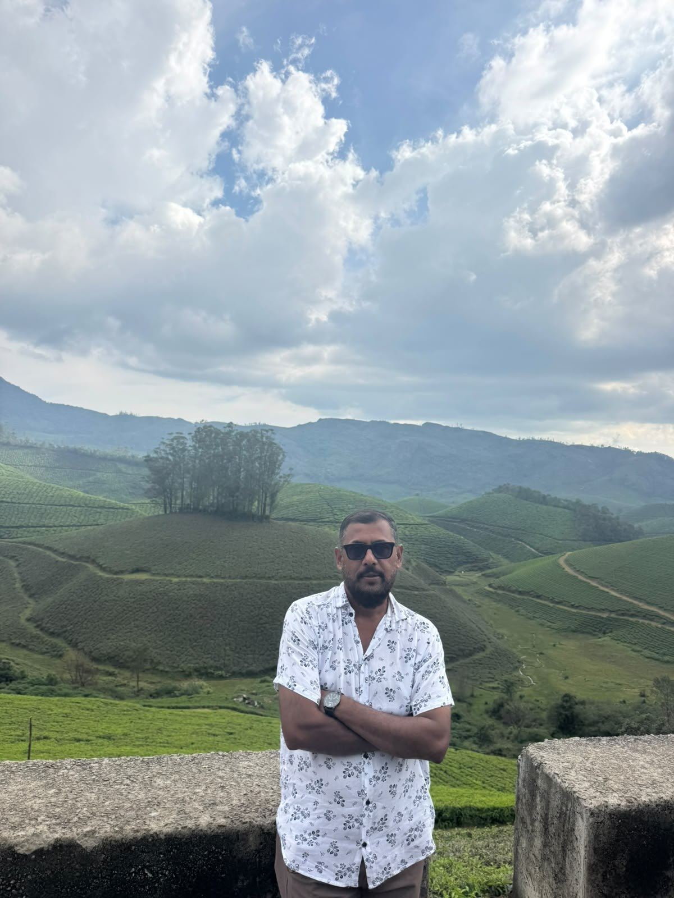
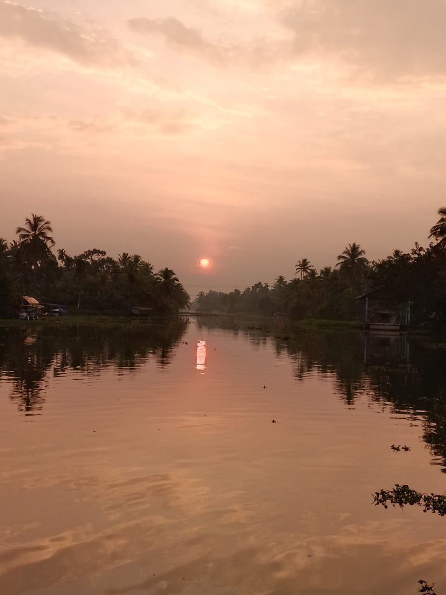

A local perspective
See the familiar sights and make room for the details that bring a place to life.
DENNIS ANTHONY · YOUR SOUTH INDIA GUIDE
Behind every journey is a person.
Let’s start by getting to know each other.


HELLO, I’M DENNIS ANTHONY
I’m Dennis Anthony, known locally as Binu, a Kerala-based tour guide covering all of South India. I guide journeys across Kerala, Tamil Nadu, Karnataka, Andhra Pradesh and Telangana, sharing the places, views and experiences that make the region special.
From quiet backwaters to green hills and the coast, there’s so much to take in. I’d love this website to be the beginning of a conversation about what you’d like to see across South India.
The photographs here are from my own collection — a glimpse of time spent out on the road, in the hills and beside the water.
Let’s talk about your South India journey →IT’S THE LITTLE THINGS THAT STAY WITH YOU
See the familiar sights and make room for the details that bring a place to life.
Tell me what interests you, where you’d like to go and the kind of journey you have in mind.
A view from the road, a quiet stretch of water, a pause that becomes a favourite memory.
FROM MY OWN CAMERA ROLL
My photographs. A few favourite views.
THE JOURNEY IS PART OF THE EXPERIENCE
Travel across South India in a vehicle that suits your group. Choose a Toyota MPV for a smaller party, a touring minibus for group outings, or a Tata passenger van for shared road journeys.
Tell me your route, group size and luggage needs. I’ll help you choose a suitable vehicle and confirm availability before you travel.
Explore the transport options ↓FOR A MORE PERSONAL JOURNEY
A versatile multi-purpose vehicle for couples, families and smaller groups. Its enclosed passenger cabin makes it a practical choice for sightseeing, city stops and journeys between destinations.
Plan a day out or a longer route with stops along the way. Share your passenger count and luggage needs so we can confirm the right arrangement.
Ask about this vehicle →ROOM TO TRAVEL TOGETHER
A high-roof minibus for groups who want to travel together. Individual passenger seats, an aisle and large side windows make it well suited to shared sightseeing and longer road journeys.
Keep your group together as you explore South India. Get in touch to discuss your route and confirm seating and luggage space for your party.
Ask about this vehicle →A SHARED RIDE, YOUR OWN PACE
A passenger van for family outings and group travel. Its long cabin, individual seats and central aisle offer a practical layout for travelling together between towns and sightseeing stops.
A useful option for day trips or a journey with several destinations. Tell me your plans so I can confirm availability and a suitable passenger and luggage arrangement.
Ask about this vehicle →A GOOD JOURNEY STARTS WITH A HELLO
Have a place in mind or a question about getting around?
I’d love to hear what you’re thinking.
YOUR SOUTH INDIA GUIDE
Get in touch directly to talk about places, transport and the journey you have in mind.
PHONE & WHATSAPP+91 94471 34447Chat with Binu on WhatsApp →Prefer a call? Select the phone number above.
NOW, WHERE SHALL WE GO?